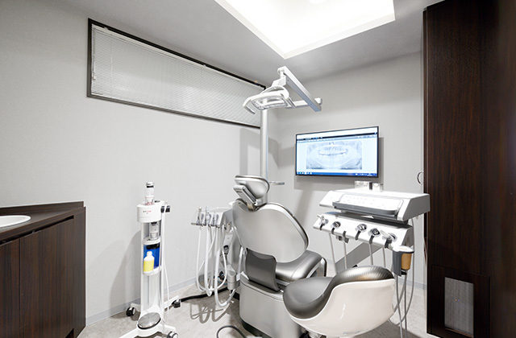
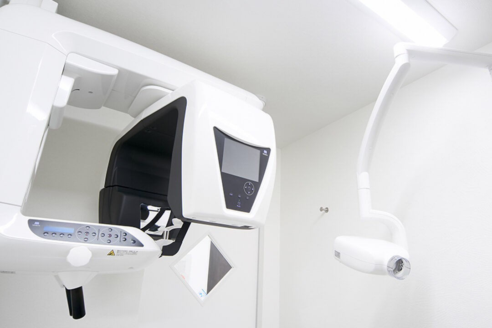
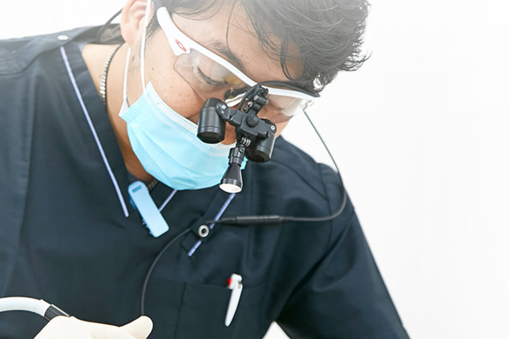
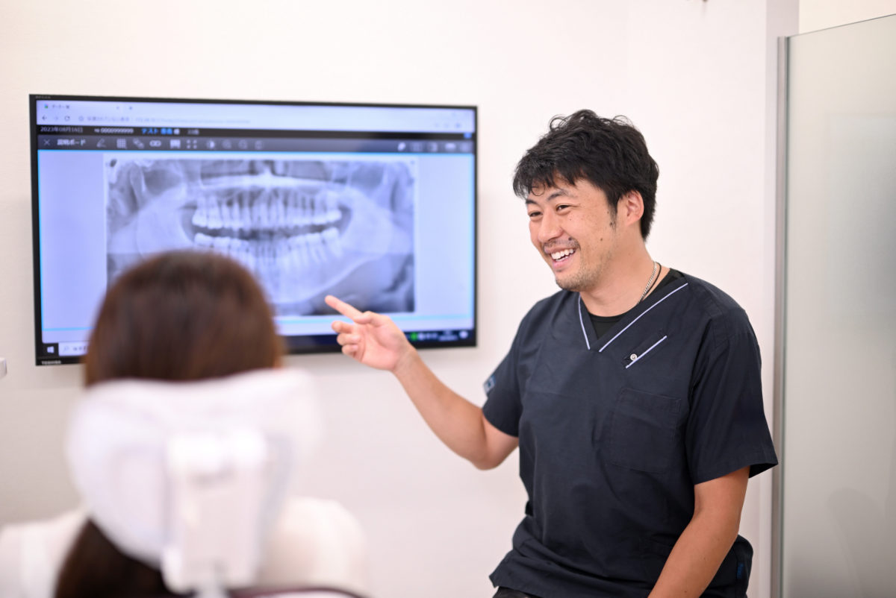
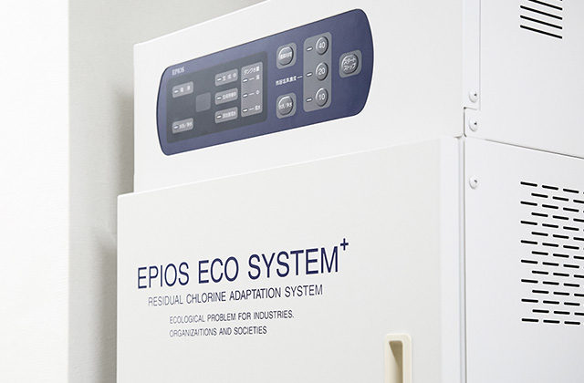

精密根管治療（保険診療）
精密根管治療（保険診療）

根管治療とは、むし歯が歯の神経（歯髄）まで進んでしまったときや、歯の根の先に膿がたまったときに、歯の内部をきれいにして歯を残すための治療です。「神経の治療」「根の治療」と呼ばれることもあります。
かなまち志田歯科では、根管治療を保険診療で行っています。自費の根管治療メニューは設けていません。そのうえで、マイクロスコープ（歯科用顕微鏡）・歯科用CT・ニッケルチタン製ファイルなどの設備をそろえ、1本の歯に必要な時間と工程をかけて治療にあたっています。
「保険の範囲で、できる限り歯を残したい」という方は、ぜひ一度ご相談ください。
歯の根の中には「根管」と呼ばれる細い管が通っています。根管は直径1mmに満たないうえに枝分かれや曲がりがあり、肉眼では奥まで見ることができません。根管治療では、この管の中の感染した神経や細菌を取り除き、隙間なく薬剤（根管充填材）で封鎖します。
取り残しがあると、治療後に再び痛みや腫れが出て、再治療や抜歯になることがあります。当院では、根管の内部を拡大して見ながら処置を進めることで、取り残しを減らし、再発しにくい治療を目指しています。
写真（準備中）
1.マイクロスコープ（歯科用顕微鏡）
根管の入り口や内部を拡大して確認しながら処置します。【要確認: 全症例で使用と書けるか／機種名】

2.歯科用CT
根の本数・形・病巣の広がりを立体的に把握し、治療計画を立てます。【要確認: どのようなときに撮影するか】
写真（準備中）
3.ニッケルチタン（NiTi）ファイル
しなやかに曲がる器具で、曲がった根管にも沿って清掃できます。【要確認: システム名／患者さんごとに新品を使用しているか】
こうした症状は、歯の神経や根の先に炎症が起きているサインかもしれません。放置すると症状が進み、歯を残せなくなることがあります。早めにご相談ください。

1.拡大視野で、根管の内部を確認しながら処置
マイクロスコープや拡大鏡で根管を拡大し、取り残しや見落としを減らします。

2.CTと口腔内カメラで、状態を共有
治療前後の状態を画像でお見せし、なぜその治療が必要かをご説明します。当院は全ユニットに口腔内カメラを備えています。

3.清潔な環境で処置
クラスB滅菌器、院内の水殺菌システム、口腔外バキュームを導入し、感染対策に配慮した環境で治療します。
根管治療は、外からは見えない「歯の中」の治療です。治療の丁寧さは、そのときには分かりにくくても、数年後にその歯が残っているかどうかに大きく影響します。
保険診療は治療内容や使える材料に決まりがあり、時間や手間をかけるほど医院の負担は大きくなります。それでも当院が設備投資と治療工程にこだわるのは、「一度治療した歯を、再治療にしないこと」「できる限り抜歯を避け、ご自身の歯を長く使っていただくこと」を大切にしているからです。
【要確認: 院長からのひとこと（治療への想い）をここに入れる（E-2）】
当院では、根管治療を保険診療で行っています。「自費と同じ」といった表現はしていません。実際にどのような設備と工程で治療しているかを、このページで具体的にご説明しています。

【要確認: 根管充填の方法・材料（側方加圧／垂直加圧、シーラー、MTA の使用有無）は回答後に追記】
1
診査・診断
工程写真（準備中）
症状をお聞きし、レントゲン・必要に応じてCTで根の状態を確認します。歯を残せる見込み、通院回数の目安、保険診療で行うことをご説明します。
2
むし歯の除去と根管の入り口の確認
工程写真（準備中）
麻酔をしてむし歯を取り除き、マイクロスコープで根管の入り口を確認します。根管の本数を見落とさないことが大切です。
3
根管の清掃・形成
工程写真（準備中）
ニッケルチタン製ファイルで感染した神経や汚れを取り除き、薬剤で洗浄します。根管の長さは電気的根管長測定器で管理します。【要確認: 使用機器】
4
薬剤の貼付と仮のふた
工程写真（準備中）
根管の中に薬を入れ、仮のふたをして次回まで待ちます。症状が落ち着くまで、この工程を繰り返すことがあります。
5
根管充填（根の中の封鎖）
工程写真（準備中）
根管がきれいになったことを確認し、根の先まで隙間なく充填材で封鎖します。レントゲンで封鎖の状態を確認します。
6
土台と被せ物
工程写真（準備中）
根管治療が終わった歯に土台を作り、被せ物で歯の形と機能を回復します。治療後も定期検診で経過を確認します。
通院回数の目安: 前歯 約【要確認】回、奥歯 約【要確認】回（歯の状態により異なります）。
当院で保険診療として行った根管治療の、治療前と治療後のレントゲン写真です。患者さんの個人情報は含まれていません。レントゲン写真は見慣れないと分かりにくいため、まず見方をご説明します。
【要確認: 歯の部位・治療内容・通院回数は写真から推定した仮の記載です。各症例の正しい内容を院長にご確認ください。症例8・9・12は術前後の写真の並びが元データと逆でしたので、充填材が入っている方を「術後」として掲載しています】
写真の見どころ：術前は、根の中に白い線（充填材）が見えません。術後は、根の先まで白い線がまっすぐ入り、上に土台（白い部分）が作られています。
写真の見どころ：術前は根の中が暗く、根の先までの治療跡がありません。術後は根の先端まで白い線がつながっています。
写真の見どころ：下の大臼歯は根が2本、根管は3本あることが多い歯です。術後の写真では、根の中に3本の白い線が見えます。1本でも取り残すと再発の原因になります。
写真の見どころ：術後の写真では、根の中に白い線（充填材）と、歯の頭の部分に白い土台が見えます。前歯は根が1本のことが多く、根の先まで確実に封鎖することが大切です。
写真の見どころ：術前は歯の頭が大きく欠けています。術後は根の先まで白い線が入り、土台が作られています。ここまで崩れていても、根が残っていれば保存できることがあります。
写真の見どころ：術前は詰め物の下が暗く写り、むし歯が深く進んでいることが分かります。術後は2本の根の先まで白い線が入っています。
写真の見どころ：上の奥歯は根が3本あり、根管の入り口が見つけにくい歯です。術後の写真では、3本の根それぞれに白い線が入っています。マイクロスコープで入り口を確認しながら進める意味が大きい部位です。
写真の見どころ：術前の写真は撮影の角度が異なるため根の先は写っていませんが、術後の写真では2本の根の先まで白い線が入っていることが確認できます。
写真の見どころ：術前は根の中に治療跡がなく、根の先の周りがやや暗く写っています。術後は3本の根管に白い線が入り、根の先まで封鎖されています。
写真の見どころ：術後の写真では、根の中の白い線と、歯の頭の部分の白い土台が見えます。上の奥歯は根の先が鼻の横の空洞（上顎洞）に近く、確実な封鎖が大切です。
写真の見どころ：術前は根の中が暗く、治療跡がありません。術後は2本の根管に白い線が入り、根の先まで封鎖されています。
写真の見どころ：術前の写真では、根の先に丸い黒い影（膿がたまって骨が溶けた部分）が見えます。術後は根の先まで白い線が入っています。黒い影は、治療後に時間をかけて骨が回復し、小さくなっていきます。
以前に根管治療をした歯が再び痛む場合や、根の先に膿がたまっている場合は、再治療（再根管治療）で歯を残せることがあります。当院では、他院で治療された歯のご相談も承ります。
ただし、歯の割れ（破折）が大きい場合や、根の先の病巣が大きく通常の根管治療では改善が見込めない場合など、当院で対応が難しいケースは、専門の医療機関をご紹介することがあります。まずは現在の状態を診査させてください。【要確認: 対応できるケース／紹介するケース（B-3）】